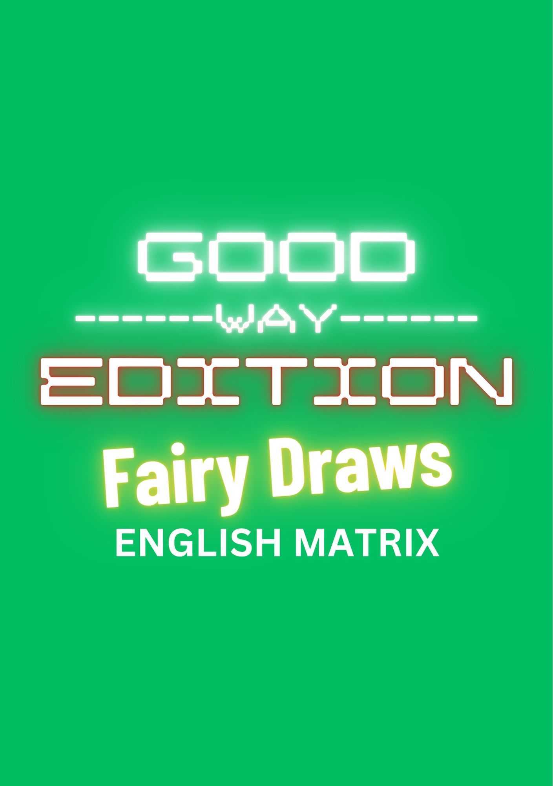
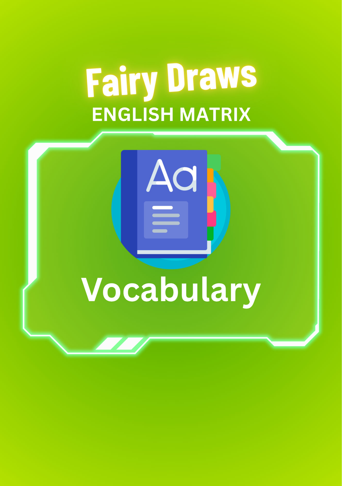
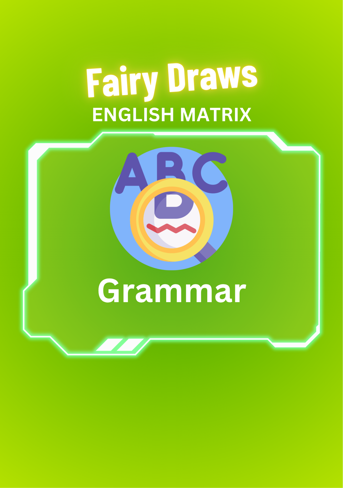
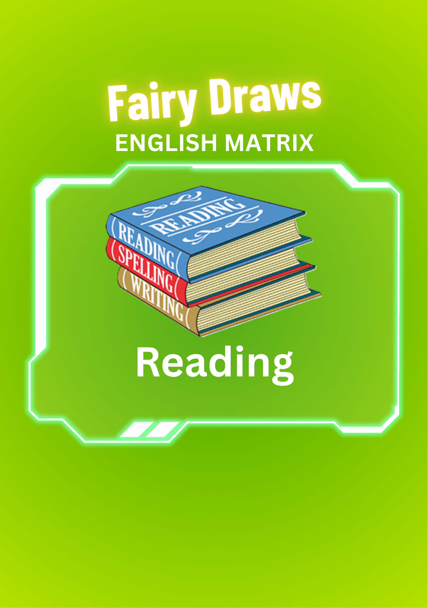
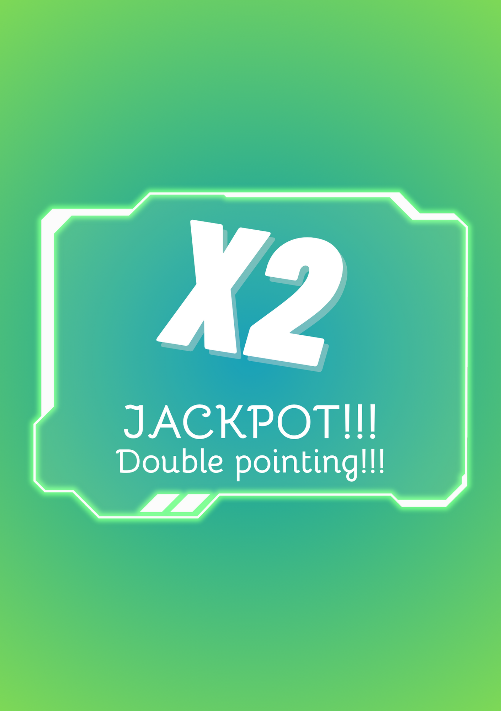
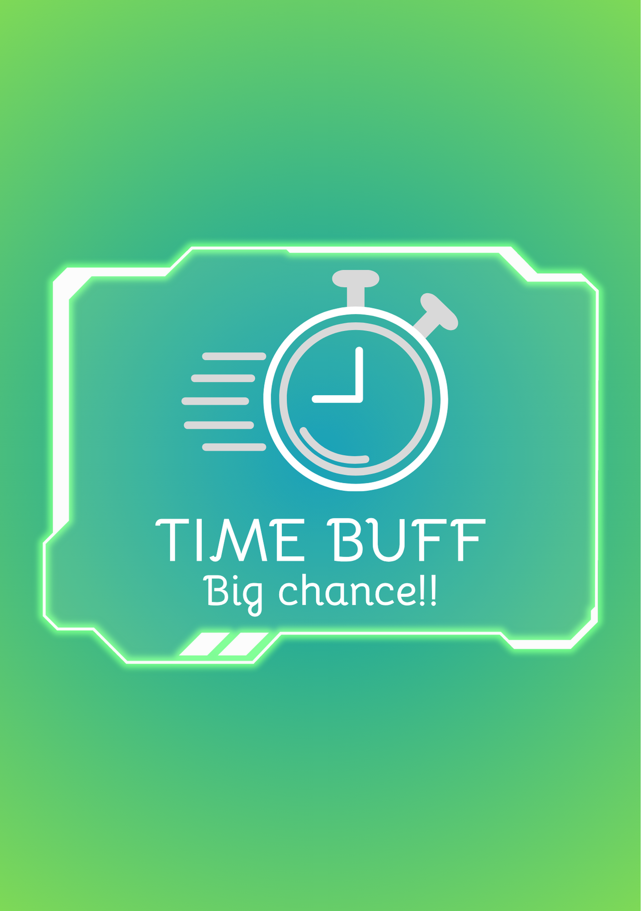
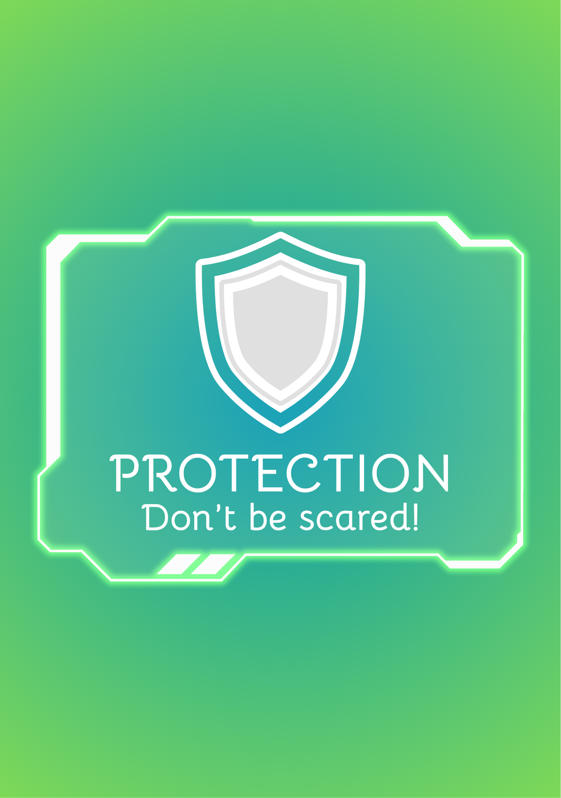
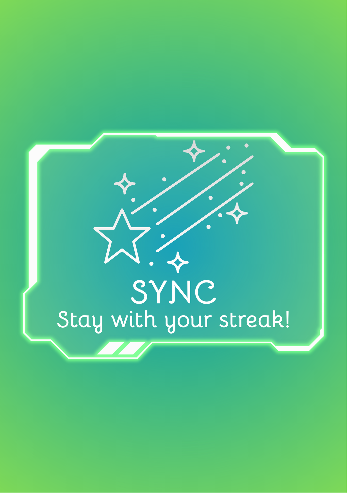

Welcome to Good-way Edition: Fairy Draw (English Matrix)
Improve your English through fun challenges!
Use your computer, tablet or laptop on the website for the best experience!
Note: Can not pause while you are in a game!
---- How to Play ----
- You start with 60 seconds on the clock
- Each round, flip 1 of 4 cards (3 topic cards + 1 power card)
- Answer multiple-choice questions correctly to earn points and time
- Correct answer: +6s (5s after 51 corrects, 4s after 101 corrects, 3s after 201 corrects, 2s after 301 corrects, 1s after 451 corrects)
- Wrong answer: -5s
- Game ends when time runs out!
- Test your grammar, vocabulary, and comprehension skills across multiple topics!
This project belongs to Trần Đặng Bình Minh (MinhCampbell) from BMSTORY Entertainment.
Update Notice - October 27th 2025: Bugs fixing, upgrading functions.
Next Update Announcement - November 25th 2025: Increasing question, new power card.
Thank you for playing and supporting us!
--- Power Cards ---
- Jackpot - Double your current score (×2)
- Time Buffing - Add 15 seconds to your timer
- Protection - Add 8s and no time penalty on next wrong answer
- Sync - Earn bonus points for consecutive correct answers
| Card List | |||||||
|---|---|---|---|---|---|---|---|
|  |  |  |  |  |  |  |  |
---- Phiên bản khác ----
| Phiên bản gốc | Phiên bản Công Nghệ Thông Tin |